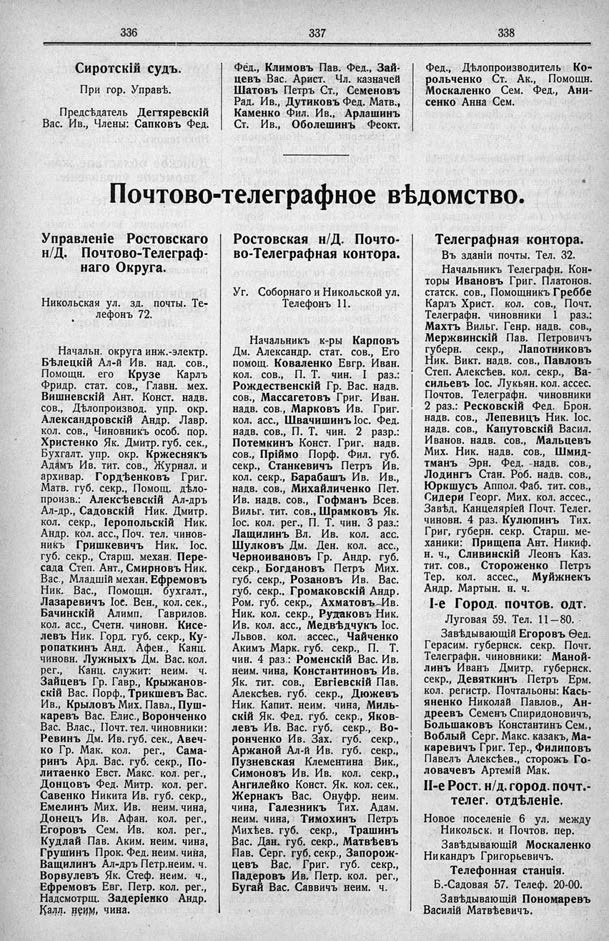

Лист источника 244
Скан

Распознанный текст
336
Сиротскій судъ.
При гор. Управѣ.
Предсѣдатель Дегтяревскій
Вас. Ив., Члены: Сапковъ Фед.
337
Фед., Климовъ Пав. Фед., Зай-
цевъ Вас. Арист. Чл. казначей
Шатовъ Петръ Ст., Семеновъ
Рад. Ив., Дутиковъ Фед. Матв.,
Каменко Фил. Ив., Арлашинъ
Ст. Ив., Оболешинъ Феокт.
338
Фед., Дѣлопроизводитель Ко-
рольченко Ст. Ак., Помощн.
Москаленко Сем. Фед., Ани-
сенко Анна Сем.
Почтово-телеграфное вѣдомство.
Управленіе Ростовскаго
н/Д. Почтово-Телеграф-
наго Округа.
Никольская ул. зд. почты. Те-
лефонъ 72.
Начальн. округа инж.-электр.
Бѣлецкій Ал-й Ив. над. сов.,
Помощн. его Крузе Карлъ
Фридр. стат. сов., Главн. мех.
Вишневскій Ант. Конст. надв.
сов., Дѣлопроизвод. упр. окр.
Александровскій Андр. Лавр.
кол. сов., Чиновникъ особ. пор.
Христенко Як. Дмитр. губ. сек.,
Бухгалт. упр. окр. Кржеснякъ
Адамъ Ив. тит. сов., Журнал. и
архивар. Гордѣенковъ Григ.
Матв. губ. секр., Помощ. дѣло-
произв.: Алексѣевскій Ал-дръ
Ал-др., Садовскій Ник. Дмитр.
кол. секр., Іеропольскій Ник.
Андр. кол. асс., Поч. тел. чинов-
никъ Гришкевичъ Ник. Іос.
губ. секр., Старш. механ. Пере-
сада Степ. Ант., Смирновъ Ник.
Вас., Младшій механ. Ефремовъ
Ник. Вас., Помощн. бухгалт.,
Лазаревичъ Іос. Вен., кол. сек.,
Бачинскій Алимп. Гаврилов.
кол. асс., Счетн. чиновн. Кисе-
левъ Ник. Горд. губ. секр., Ку-
ропаткинъ Анд. Афен., Канц.
чиновн. Лужныхъ Дм. Вас. кол.
рег., Канц. служит: неим. ч.
Зайцевъ Гр. Гавр., Крыжанов-
скій Вас. Порф., Трикшевъ Вас.
Ив., Крыловъ Мих. Павл., Пуш-
каревъ Вас. Елис., Воронченко
Вас. Влас., Почт. тел. чиновники:
Ревинъ Дм. Ив. губ. сек., Авеч-
ко Гр. Мак. кол. рег., Сама-
ринъ Ард. Вас. губ. секр., По-
литаенко Евст. Макс. кол. рег.,
Донцовъ Фед. Митр. кол. рег.
Савенко Никита Ив. губ. секр.,
Емелинъ Мих. Ив. неим. чина,
Донецъ Ив. Афан. кол. рег.,
Егоровъ Сем. Ив. кол. рег.,
Кудлай Пав. Аким. неим. чина,
Грушинъ Прок. Фед. неим. чина,
Ващилинъ Ал-дръ Петр. неим. ч.
Ворвулевъ Як. Стеф. неим. ч.,
Ефремовъ Евг. Петр. кол. рег.,
Надсмотрщ. Задеріенко Андр.
Калл. неим, чина.
Ростовская н/Д. Почто-
во-Телеграфная контора.
Уг. Соборнаго и Никольской ул.
Телефонъ 11.
Начальникъ к-ры Карповъ
Дм. Александр. стат. сов., Его
помощ. Коваленко Евгр. Иван.
кол. сов., П. Т. чин. I раз.:
Рождественскій Гр. Вас. надв.
сов., Массагетовъ Григ. Иван.
надв. сов., Марковъ Ив. Григ.
кол. асс., Швачишинъ Іос. Фед.
надв. сов., П. Т. чин. 2 разр.:
Потемкинъ Конст. Григ. надв.
сов., Пріймо Порф. Фил. губ.
секр., Станкевичъ Петръ Ив.
кол. секр., Барабашъ Ив. Ив.,
надв. сов., Михайличенко Пет.
Ив. надв. сов., Гофманъ Всев.
Вильг. тит. сов., Шрамковъ Як.
Іос. кол. рег., П. Т. чин. 3 раз.:
Лащилинъ Вл. Ив. кол. асс.
Шулковъ Дм. Ден. кол. асс.,
Черноивановъ Гр. Андр. губ.
секр., Богдановъ Петръ Мих.
губ. секр., Розановъ Ив. Вас.
губ. секр., Громаковскій Андр.
Ром. губ. секр., Ахматовъ Ив.
Ник. кол. секр., Рудаковъ Ник.
Ив. кол. асс., Медвѣдчукъ Іос.
Львов. кол. ассес., Чайченко
Акимъ Марк. губ. секр., П. Т.
чин. 4 раз.: Роменскій Вас. Ив.
неим. чина, Константиновъ Ив.
Як. тит. сов., Евгіевскій Пав.
Алексѣев. губ. секр., Дюжевъ
Ник. Капит. неим. чина, Миль-
скій Як. Фед. губ. секр., Яков-
левъ Ив. Вас. губ. секр., Во-
ронченко Ив. Зах. губ. секр.,
Аржаной Ал-й Ив. губ. секр.,
Пузневская Клементина Вик.,
Симоновъ Ив. Ив. кол. секр.,
Ангилейко Конст. Як. кол. сек.,
Жернакъ Вас. Онуфр. неим.
чина, Галезникъ Тих. Адам.
неим. чина, Тимохинъ Петръ
Михѣев. губ. секр., Трашинъ
Вас. Дан. губ. секр., Матвѣевъ
Пав. Серг. губ. секр., Запорож-
цевъ Вас. Григ. губ. секр.,
Падеровъ Ив. Петр. кол. рег.,
Бугай Вас. Саввичъ неим. ч.
Телеграфная контора.
Въ зданіи почты. Тел. 32.
Начальникъ Телеграфн. Кон-
торы Ивановъ Григ. Платонов.
статск. сов., Помощникъ Греббе
Карлъ Христ. кол. сов., Почт.
Телеграфн. чиновники 1 раз.:
Махтъ Вильг. Генр. надв. сов.,
Мержвинскій Пав. Петровичъ
губерн. секр., Лапотниковъ
Ник. Викт. надв. сов., Павловъ
Степ. Алексѣев. кол. секр., Ва-
сильевъ Іос. Лукьян. кол. ассес.
Почтов. Телеграфн. чиновники
2 раз.: Ресковскій Фед. Брон.
надв. сов., Лепевицъ Ник. Іос.
надв. сов., Капутовскій Васил.
Иванов. надв. сов., Мальцевъ
Мих. Ник. надв. сов., Шмид-
тманъ Эрн. Фед. надв. сов.,
Лодингъ Стан. Роб. надв. сов.,
Юркшусъ Аппол. Фаб. тит. сов.,
Сидери Георг. Мих. кол. ассес.,
Завѣд, Канцеляріей Почт. Телег.
чиновн. 4 раз. Кулюпинъ Тих.
Григ, губерн. секр. Старш. ме-
ханики: Прищепа Ант. Никиф.
н. ч., Сливинскій Леонъ Каз.
тит. сов., Стороженко Петръ
Тер. кол. ассес., Муйжнекъ
Андр. Мартын. н. ч.
I-е Город. почтов. одт.
Луговая 59. Тел. 11—80.
Завѣдывающій Егоровъ Ѳед.
Герасим. губернск. секр. Почт.
Телеграфн. чиновники: Маной-
линъ Иванъ Дмитр. губернск.
секр., Девяткинъ Петръ Ерм.
кол. регистр. Почтальоны: Кась-
яненко Николай Павлов., Ан-
дреевъ Семенъ Спиридоновичъ,
Большаковъ Константинъ Сем.,
Воблый Серг. Макс. казакъ, Ма-
каревичъ Григ. Тер., Филипповъ
Павелъ Алексѣев., сторожъ Го-
ловачевъ Артемій Мак.
II-е Рост. н/д. город. почт.-
телег. отдѣленіе.
Новое поселеніе 6 ул. между
Никольск. и Почтов. пер.
Завѣдывающій Москаленко
Никандръ Григорьевичъ.
Телефонная станція.
Б.-Садовая 57. Телеф. 20-00.
Завѣдывающій Пономаревъ
Василій Матвѣевичъ.